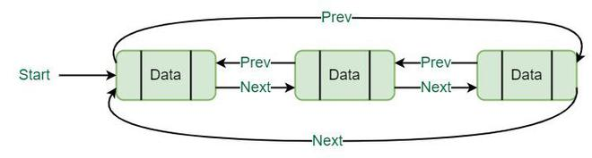

A circular doubly linked list is a variation of a linked list where each node contains a value and two links: one to the next node and one to the previous node. The last node's next link points back to the first node, and the first node's previous link points to the last node, forming a circular structure.
In a circular doubly linked list, each node has two links: a next link and a previous link. The next link points to the next node in the sequence, and the previous link points to the previous node. This circular arrangement allows for traversal in both forward and backward directions.
There are two common variations of circular doubly linked lists:
Here's an example of a sentinel circular doubly linked list representation:
Circular doubly linked lists are useful when bidirectional traversal is required or when we want to efficiently navigate through the list in forward and backward directions. The sentinel nodes in a sentinel circular doubly linked list simplify certain operations, while headerless circular doubly linked lists save memory by excluding sentinel nodes.